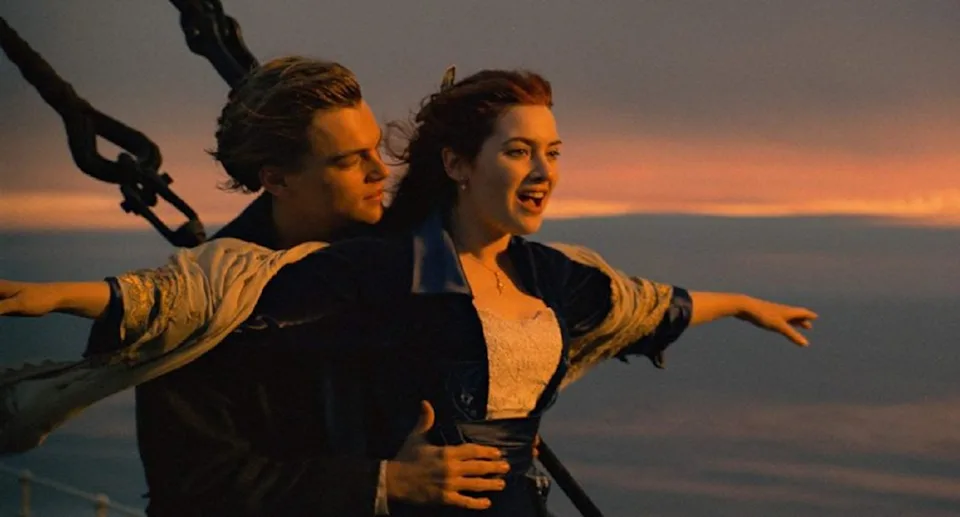
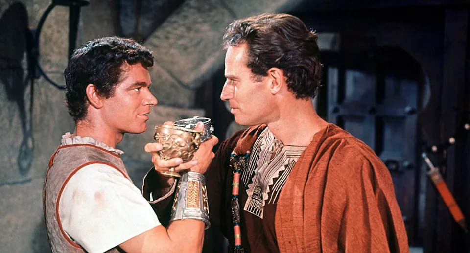

Os 5 filmes mais premiados da história dos Oscar's
Em mais de 90 edições da maior premiação da indústria cinematográfica, alguns filmes se destacaram como recordistas de indicações e estatuetas do Oscar. Além de terem a honra do maior reconhecimento do cinema, essas produções conseguiram ser exaltadas em pelos menos oito categorias cada uma após trabalhos impecáveis nas telonas. Confira os maiores vencedores do Oscar:
1. TITANIC (1997)
A trama inspirada no naufrágio real da embarcação RMS Titanic, ocorrido em 1912, garantiu 14 indicações ao Oscar e levou 11 estatuetas como recordista da premiação. "Titanic" venceu os prêmios de: Melhor Filme, Melhor Direção, Melhor Fotografia, Melhor Direção de Arte, Melhor Figurino, Melhor Trilha-sonora, Melhor Edição, Melhor Efeitos Sonoros, Melhores Efeitos Visuais, Melhor Música Original e Melhor Som.
2. BEN-HUR (1959)
Dirigido por William Wyler, o filme conta a história de um mercador judeu com o nome do título da produção e é condenado a viver como escravo por um velho amigo. Com 12 indicações ao Oscar, o longa é outro recordista com 11 estatuetas ao vencer os prêmios de: Melhor Filme, Melhor Direção, Melhor Fotografia, Melhor Direção de Arte, Melhor Figurino, Melhor Mixagem Som, Melhor Edição, Melhores Efeitos Especiais, Melhor Trilha-sonora, Melhor Ator (Charlton Heston) e Melhor Ator Coadjuvante (Hugh Griffith).
3. SENHOR DOS ANÉIS: O RETORNO DO REI (2003)
Baseado nos livros da série escrita por J.R.R. Tolkien, o longa é o último da trilogia adaptada para o cinema. O detalhe é que o filme venceu o Oscar nas 11 categorias as quais foi indicado: Melhor Filme, Melhor Direção, Melhor Roteiro Adaptado, Melhores Efeitos Visuais, Melhor Direção de Arte, Melhor Edição, Melhor Figurino, Melhor Maquiagem, Melhor Mixagem de Som, Melhor Trilha Sonora, Melhor Canção Original.

4. AMOR, SUBLIME AMOR (1961)
O longa da década de 1960 é baseado em um musical homônimo da Broadway, de 1957, ao contar a história de amor proibido entre membros de duas gangues rivais na periferia de Nova York. Indicado em 11 categorias, a produção venceu 10 prêmios como: Melhor Ator Coadjuvante (George Chakiris), Melhor Atriz Coadjuvante (Rita Moreno), Melhor Filme, Melhor Direção, Melhor Fotografia, Melhor Direção de Arte, Melhor Som, Melhor Edição e Melhor Música.

5. O PACIENTE INGLÊS (1996)
Ambientado na Segunda Guerra Mundial, a trama retrata a história de um combatente que tem o avião abatido e passa a receber os cuidados de uma enfermeira canadense. Com 12 nomeações, o longa foi vencedor de nove prêmios nas categorias: Melhor Filme, Melhor Direção, Melhor Fotografia, Melhor Direção de Arte, Melhor Figurino, Melhor Mixagem de Som, Melhor Edição, Melhor Atriz Coadjuvante (Juliette Binoche) e Melhor Musica.